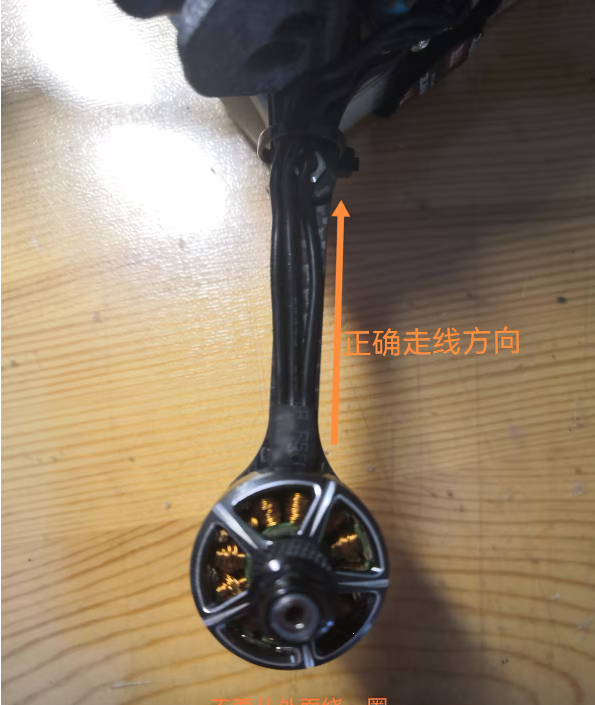

穿越机的组装
2025-01-07
组装机架
按照机架附带的说明书上图示安装即可，先不要安装顶板而且不要使用胶水固定任何地方。安装电机
将4个电机用长度合适的螺丝固定在机臂上。
将电调安装至机架。
M1电机焊盘应该在飞机的右下。将电机焊接至电调
右上的 3个，右下的3个，左上的3个，左下的3个焊盘分别对应一个电机。将飞控安装在电调上面。
配套飞塔直接用送的SH1.0连接线插上即可，如果不是配套飞塔，则需要调整线序。规则如下(仅限飞控与电调之间的连接)：- V、VCC、B、B+、BAT等均意味着电池正极。
- G、GND等均意味着电池负极。
- 1、2、3、4意味着电机序号。
- C、I、CU、CUR、CURR等意味着这是电流传感器的连接线
- NC为不需要连接
- RX等是电调回传信号线，对于现在的BF固件来说已经过时，不需要连接。
在飞控的商品页中找到接线图，按照接线图焊接图传、摄像头、接收机等外围设备。
注意事项：- 供电不可超出承受范围，否则必坏
- 正负极不可接反，否则必坏
- 外围设备应按照接线图中的端口焊接以达到最佳使用效果
- RX信号线应连接TX
- SCL信号线可多设备并联，SDA信号线可多设备并联
- 模拟图传应将信号线焊接在飞控上以获得OSD画面，数字图传则不需要
- 飞控的降压模块供电能力有限，如需外接大功率舵机等设备，需要使用另外的降压模块供电
- 不要有任何电路接触到碳纤维机架